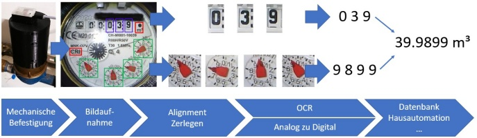
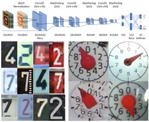

This is the first time you started the device after the initial installation. You have been automatically routed to the initial setup procedure.
With the prodecure the basic setup of your device within seven steps will be performed. After completion of all steps the setup mode will be completed
and the device restarts automatically to the regular web interface.
Note: All settings of the initial setup will be also accessible using regular web interface.
See documentation: Initial setup procedure for additional explanations.
You can navigate forward and backward during the setup with the buttons "Next Step" and "Previous Step".
With the button "Abort Setup" the setup will be skipped and abort screen will be presented.
To restart the setup process, push the button "Restart Setup".
This is an overview over the seven steps:
Adjust lens focus and check for reflections of flashlight.
Ensure you camera lens has proper focus to object and flashlight do not create any distoring reflections.
Create the reference image.
It is the base for the position referencing and the identification of the digits and counters.
Define two unique alignment marker.
They are used to perform an orientation alignment of the taken camera images before further processing
Additional configuration: List of all parameters
Further configuration of your device can be done here.
NOTE: This can also be performed later with regular web interface, e.g. to setup any publishing service like MQTT
Setup Completion: End/Abort setup mode
In the final step the setup mode needs to be properly terminated by pushing the button in this page.
NOTE: This is important, otherwise the setup mode is recalled again after reboot.
Please be patient when switching to another step. The device takes some time to load all needed information!
If you need support, have a look to the documentation or the discussion pages.
Have fun with your AI-on-the-edge-device!